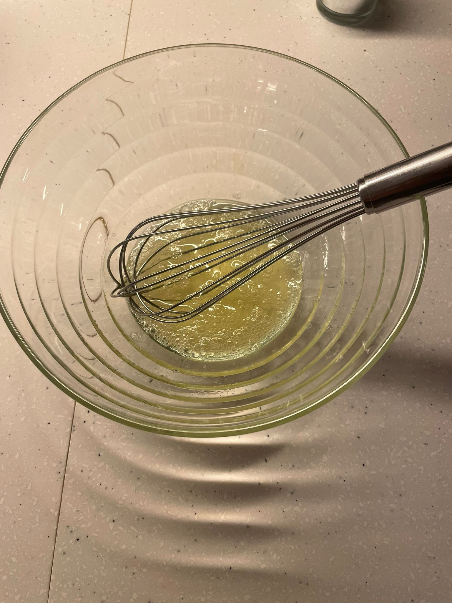
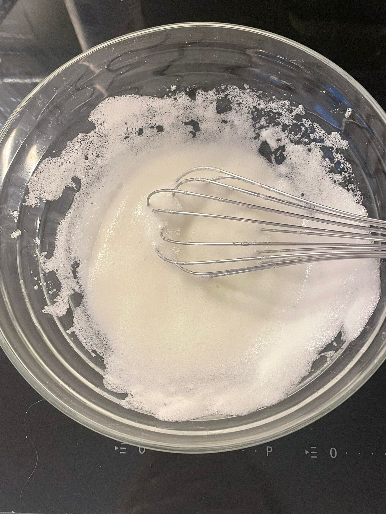
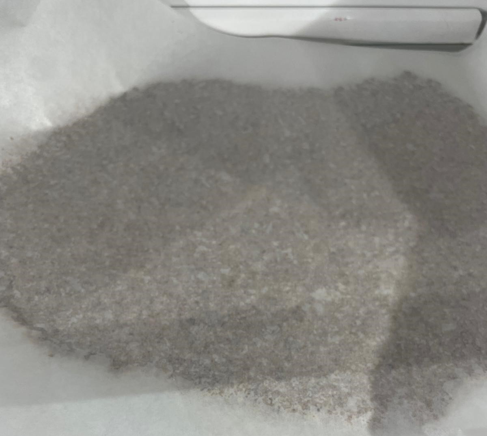

Cinnamon Stars
Ingredients
- 3 eggs
- 400g of MAndle
- 250g od Puderzucker
- 1 spoon of cinnamon
- 1 teaspoon of cacao

Recipe
Collect all the ingredients and take the egss.
Seperate the egg whites from the yolks and put the egg whites into a bowl.
Afterwards add a pinch of salt and mix everything together. Beat the egg white until its stiff and proportionally add the PUDERZUCKER to it while mixing.
Seperate the egg whites from the yolks and put the egg whites into a bowl.
Afterwards add a pinch of salt and mix everything together. Beat the egg white until its stiff and proportionally add the PUDERZUCKER to it while mixing.



After you've beat the egg white and added all the PUDERZUCKER, take a secong bowl. Add aroung 50g of the mixture and put it to the side Take the cacao and cinnamon and add those 2 ingredients to the bigger mixture. Mix everything together and then add the MANDLE. Keep adding it until the micture isnt too sticky anymore. When ur "" is ready take out 2 baking sheets and spead the "" onto one of them. Press it small and cover it with a second one. Afterwards put it into the fridge for around an hour.

After an hour has passed, take out the "" and remove its cover. Take some more PUDERZUCKER and sprinkle some of it into a bowl. Take out the STARTHINGY put it in there
Roll out the "" until its about 1 cm thick. AUSSTEHEN the stars (or other forms) until all the "" is gone. Put those onto another prepared baking sheet.
Heat u the oven to 140 C. WHile waiting for the eôven to heat up take the before put to the side mxture and spread it over the stars.